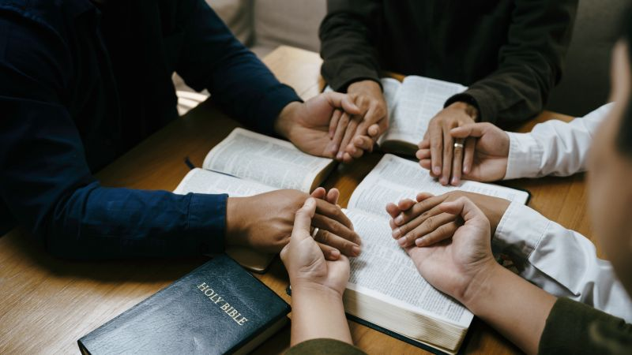

事工
让前线工人得以休息、恢复，然后带着新的力量回去。

疲乏的传教士和牧者需要一个能歇一歇的地方。同工恢复了，事工才能走得久。
前线工人几乎没有休息的机会。一个人硬撑，家庭和事工会一起磨损。
地区退修和聚会提供休息、圣经和同工之间的相遇。我们帮助路费、住宿、节目和带领者的费用。
人在事先。 没有恢复的同工站不久。
家庭得以喘气。 退修照顾的不只是事工，也是家庭。
他们能回到现场。 歇过的工人再走进邻舍中间。
奉献 全部事工
您的同行，帮助本地同工在最艰难的地方传扬耶稣。